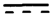
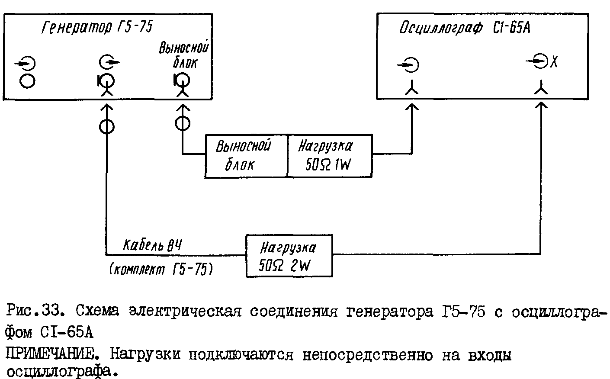
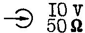

синхроимпульса
«

»
соединить
со входом синхронизации осциллографа.
На вход
Содержание
3. Общие указания по эксплуатации 4
4. Указания мер безопасности 5
1.1. Генератор импульсов точной амплитуды Г5-75 представляет собой источник импульсов прецизионной амплитуды и предназначен для исследования, настройки и испытаний систем и приборов, используемых в радиоэлектронике, связи, автоматике, вычислительной и измерительной технике, приборостроении.
Класс точности – 1.
1.2. Рабочие условия эксплуатации:
температура окружающей среды от 278 до 313 K (от 5 до 30 °С);
относительная влажность воздуха до 95% при температуре 303 K (30 °C);
атмосферное давление 60 – 106 кПа (460 – 800 мм рт. ст.);
напряжение питающей сети 220 В ± 22 В частотой 50 ± 0,5 Гц с содержанием гармоник до 5% и напряжение сети 220 В ± 11 В частотой 400 Гц ± 12 Гц с содержанием гармоник до 5%.
2.1. Генератор обеспечивает на основном выходе на нагрузке Rн = (50 ± 2,5) Ом одинарные импульсы периодической последовательности положительной или отрицательной полярности.
2.2. Амплитуда основных импульсов изменяется от 10 мВ до 9,999 В. Весь диапазон разбит на 3 поддиапазона:
1 – 9,999 В;
0,1 – 0,9999 В – с внешним аттенюатором 1 20 дБ;
0,01 – 0,09999 В – с внешним аттенюатором 2 40 дБ.
Дискретность регулировки амплитуды 1 мВ; 0,1 мВ; 0,01 мВ на каждом из поддиапазонов соответственно.
2.3. Основная погрешность установки амплитуды основных импульсов в динамическом режиме на внешней нагрузке Rн = (50 ± 2,5) Ом при скважности не менее 2 не превышает ±0,01 v.
При этом погрешность установки амплитуды в режиме постоянного тока не превышает 0,007 v, где v – установленное значение амплитуды основных импульсов.
2.4. Погрешность установки амплитуды основных импульсов в динамическом режиме в рабочих условиях эксплуатации на внешней нагрузке Rн = (50 ± 2,5) Ом при скважности не менее 2 не превышает:
±(0,01 v + 2 мВ) в поддиапазоне 1 – 9,999 В;
±0,015 v в поддиапазонах 0,01 – 0,9999 В,
при этом погрешность установки амплитуды в режиме постоянного тока не превышает:
±0,007 v поддиапазоне 1 – 9,999 В;
±0,01 v поддиапазонах 0,01 – 0,9999 В,
где v – установленное значение амплитуды основных импульсов.
2.5. Период повторения основных импульсов в режиме внутреннего запуска регулируется от 0,1 мкс до 9,99 с. Весь диапазон разбит на 6 поддиапазонов с помощью масштабного множителя 10K, где K = 0, 1, 2, 3, 4, 5:
0,1 – 9, 99 мкс – с дискретностью 0,1 мкс;
1 – 999 мкс – с дискретностью 1 мкс;
10 мкс – 9,99 мс – с дискретностью 10 мкс;
0,1 – 99,9 мс – с дискретностью 0,1 мс;
1 – 999 мс – с дискретностью 1 мкс;
10 мс – 9,99 с – с дискретностью 10 мс;
2.6. Погрешность установки периода повторения основных импульсов в рабочих условиях эксплуатации не превышает ±1 × 10–3 T, где T – установленный период повторения.
3.7. Длительность основных импульсов в режиме внутреннего запуска регулируется от 50 нс до 1 с, в режиме внешнего запуска от 100 нс до 1 с. Весь диапазон разбит на 6 поддиапазонов с помощью масштабного множителя 10K, где K = 0, 1, 2, 3, 4, 5:
50 нс – 50 мкс – с дискретностью 0,1 мкс, где 0,05-10 мкс – дополнительный поддиапазон;
1 – 500 мкс – с дискретностью 1 мкс, где 0,05-10 мкс – дополнительный поддиапазон;
10 мкс – 5,00 мс – с дискретностью 10 мкс;
0,1 – 50,0 мс – с дискретностью 0,1 мс;
1 – 500 мс – с дискретностью 1 мс;
10 мс – 1,00 с – с дискретностью 10 мс.
2.8. Погрешность установки длительности основных импульсов в режимах внутреннего и внешнего запуска в рабочих условиях эксплуатации не превышает ±(1 × 10–3 τ + 15 нс), где τ – установленная длительность импульсов.
2.9. Временной сдвиг основных импульсов относительно синхроимпульса в режимах внутреннего и внешнего запуска регулируется в пределах от 0 до 9,98 с. Весь диапазон разбит на 6 поддиапазонов с помощью масштабного множителя 10K, где K = 0, 1, 2, 3, 4, 5:
0 нс – 99,8 мкс – с дискретностью 0,1 мкс, где 0 – 10 мкс – дополнительный поддиапазон;
0 – 998 мкс – с дискретностью 1 мкс, где 0 – 10 мкс – дополнительный поддиапазон;
0 – 9,98 мс – с дискретностью 10 мкс;
0 – 99,8 мс – с дискретностью 0,1 мс;
1 – 998 мс – с дискретностью 1 мс;
0 – 9,98 с – с дискретностью 10 мс.
2.10. Погрешность установки временного сдвига в рабочих условиях эксплуатации в режимах внутреннего и внешнего запуска не превышает ±(1 × 10–3 D + 20 нс), где D – установленный временной сдвиг.
2.11. Длительность фронта и среза основных импульсов не превышает 10 нс.
2.12. Выбросы на вершине основных импульсов и в паузе не превышают 1%.
2.13. Неравномерность вершины и в паузе основных импульсов после времени установления не более 40 нс не превышает 0,3 %.
2.14. Генератор обеспечивает синхроимпульс положительной полярности при внешней согласованной нагрузке 50 Ом ± 5 Ом с параметрами, приведенными в табл. 1.
Таблица 1
|
Наименование параметра |
Значение параметра |
|
|
Амплитуда импульса (максимальное значение), В, не менее |
1,2 |
|
|
Длительность фронта, нс, не более |
10 |
|
|
Начальная задержка относительно импульсов внешнего запуска, мкс, не более |
1 |
|
|
Длительность синхроимпульса, нс, не более |
50 |
|
|
|
не менее |
20 |
2.15. Предусмотрены
следующие режимы запуска: внутренний,
разовый механический и внешний импульсами
положительной или отрицательной
полярности с амплитудой
1 – 10 В,
частотой не более 1 МГц или синусоидальным
напряжением с амплитудой 1 – 10 В, частотой
50 Гц – 1 МГц.
2.16. Сопротивление входа внешнего запуска 50 Ом ± 5 Ом.
2.17. Прибор может работать от линии коллективного пользования (ЛКП). Управляющие сигналы ЛКП соответствуют инверсному коду ТТЛ (транзисторно-транзисторной логики) (ЛОГ. 0 – высокий уровень, амплитуда сигнала не менее 2,5 В; ЛОГ. 1 – низкий уровень, амплитуда сигнала не более 0,8 В). При работе от ЛКП задаются значения всех параметров и устанавливаются любые режимы работы (кроме режима АВТ. и значения ПОЛЯ). Скорость передачи не превышает 10 байт/с.
2.18. В приборе предусмотрена возможность записи IO программ, которые хранятся при выключении прибора в течение 2 ч. В приборе обеспечен режим автоматического переключения программ (режим АВТОМАТ).
2.19. Паразитная модуляция параметров не превышает значений:
(0,5 × 10–3 v + 0,5 мВ) – для амплитуды основных импульсов;
2 нс – для временного сдвига основного импульса относительно синхроимпульса и длительности основных импульсов в режиме внешнего запуска;
(0,3 τф внеш. + 0,5 нс) – для временного сдвига синхроимпульса относительно импульса внешнего запуска, где τф внеш. – длительность фронта внешних запускающих импульсов.
2.20. Прибор обеспечивает технические характеристики после времени установления рабочего режима, равного 15 мин.
2.21. Прибор допускает непрерывную работу в рабочих условиях в течении 8 ч при сохранении своих технических характеристик.
Примечание. Время непрерывной работы не включает в себя время установления рабочего режима прибора.
2.22. Прибор сохраняет свои технические характеристики при питании от сети переменного тока напряжением 220 ± 22 В, частотой 50 Гц ± 0,5 Гц с содержанием гармоник до 5%, частотой 400 Гц ± 12 Гц с содержанием гармоник до 5%.
2.23. Электрическая изоляция цепи сетевого питания генератора должна выдержать без перебоя испытательное напряжение переменного тока:
1500 В – в нормальных условиях;
900 В – при повышенной влажности.
Сопротивление изоляции указанной цепи генератора относительно корпуса должно быть, не менее:
20 МОм – в нормальных условиях;
2 МОм – при повышенной относительной влажности;
5 МОм – при повышенной температуре.
2.24. Мощность, потребляемая от сети при нормальном напряжении, не более 60 В × А.
2.25. Прибор сохраняет свои технические характеристика в пределах норм, приведенных выше, в рабочих условиях эксплуатации, приведенных в п. 1.2.
2.26. Наработка на отказ T0 не менее 3000 ч.
2.27. Средний срок службы прибора 10 лет. Технический ресурс 10000 ч.
2.28. Габаритные размеры, не более:
генератора – 312 × 172 × 324 мм;
выносного блока – 180 × 68 × 45 мм.
2.29. Масса не более 8 кг.
3.1. После длительного хранения следует произвести реконсервацию прибора согласно разделу 12 настоящего описания.
3.2. Перед началом эксплуатации прибора следует проверить:
сохранность пломб;
комплектность согласно табл. 2;
отсутствие видимых механических повреждений;
наличие и прочность крепления органов управления и коммутации, четкость фиксации их положений, плавность вращения ручек органов настройки, наличие предохранителей и т. п.;
чистоту гнезд, разъемов и клемм;
состояние соединительных проводов, кабелей, переходов;
состояние лакокрасочных покрытий и четкость маркировок;
отсутствие механических повреждений или ослабления креплений элементов схемы (определяется на слух при наклонах изделия).
3.3. При эксплуатации вентиляционные отверстия на корпусе не должны закрываться посторонними предметами.
3.4. До включения прибора необходимо ознакомиться с разделами 5, 4, 5 настоящего технического описания.
3.5. Сделать отметку в формуляре о начале эксплуатации и записать показания счетчика машинного времени.
4.1. При работе с прибором необходимо соблюдать действующие правила по технике безопасности при работе с электроустановками.
4.2. По электробезопасности прибор соответствует классу защиты 01.
4.3. Перед
включением прибора в сеть необходимо
надежно заземлить корпус прибора
|
через зажим защитного заземления |
« |
». |
Присоединение зажима защитного заземления |
к заземляющей шине должно производиться до других присоединений, а отсоединение – после всех отсоединений.
4.4. При
проведении измерений при обслуживании
и ремонте в случае использования прибора
совместно с другими приборами или
включения его в состав установок
необходимо для выравнивания потенциалов
корпусов соединить между собой соединенные
с корпусом
|
клеммы всех приборов |
« |
». |
4.5. Включение прибора для регулировки и ремонта со снятыми стенками разрешается только лицам, прошедшим соответствующий инструктаж.
4.6. При ремонте прибора не допускать соприкосновения с токонесущими элементами, так как в приборе имеется переменное напряжение 220 В.
5.1. Перед началом работы следует внимательно изучать техническое описание и инструкцию по эксплуатации, а также ознакомиться с расположением и назначением органов управления и контроля на передней панели и задней стенке прибора.
5.2. Разместить прибор на рабочем месте, обеспечив удобство работы и условия естественной вентиляции.
5.3. Проверить надежность заземления.
5.4. Подсоединить шнур к питающей сети.
Переключатель сети должен находиться в выключенном состоянии.
6.1.1. Если прибор внесен в помещение после пребывания при отрицательных температурах, то перед включением его необходимо выдержать в нормальных условиях в течение 4 ч.
6.1.2. Органы управления могут находиться в произвольном положении.
6.1.3. Нажать кнопку СЕТЬ, при этом должны загореться индикаторы.
6.1.4. До начала работы необходимо прогреть прибор в течение 15 мин.
6.1.5. Прежде чем начать работу с генератором Г5-75, необходимо ознакомиться с назначением всех органов управления генератором (раздел 5).
Каждой кнопке присвоено два значения: при нижнем поле и при верхнем поле (табл. 2).
Таблица 2
|
Нижнее поле |
Верхнее поле |
||
|
Обозначение |
Назначение |
Обозначение |
Назначение |
|
0 |
Цифра 0 |
Режим внутреннего запуска |
|
|
1 |
Цифра 1 |
_∏_ |
Внешний запуск импульсами положительной полярности |
|
2 |
Цифра 2 |
Внешний запуск импульсами отрицательной полярности |
|
|
3 |
Цифра 3 |
Разовый механический запуск |
|
|
4 |
Цифра 4 |
 |
Режим постоянного тока |
|
5 |
Цифра 5 |
НАБ. |
Набор |
|
6 |
Цифра 6 |
№ П. |
Номер программы |
|
7 |
Цифра 7 |
АВТ. |
Режим автомата |
|
8 |
Цифра 8 |
▼1 |
Калибровка 1 |
|
9 |
Цифра 9 |
▼2 |
Калибровка 2 |
|
T |
Период |
АТ1 |
Подключение аттенюатора 1 |
|
D |
Временной сдвиг |
АТ2 |
Подключение аттенюатора 2 |
|
τ |
Длительность |
+U |
Выходные импульсы положительной полярности |
|
K |
Множитель для временных параметров |
–U |
Выходные импульсы отрицательной полярности |
|
U |
Амплитуда |
СБРОС |
Сброс режимов АВТ., ▼1, ▼2, АТ1, АТ2 |
Кнопка ПОЛЕ переключает значение поля.
Прибор обеспечивает работу в следующих режимах:
внутренний запуск;
внешний запуск импульсами положительной полярности;
внешний запуск импульсами отрицательной полярности;
разовый механический запуск.
Проверка
исправности работы прибора производится
с помощью осциллографа CI-65A.
|
Генератор
Г5-75 установить в режим внутреннего
запуска |
(кнопка « |
»), |
выход |
|
синхроимпульса |
« |
|
» |
соединить
со входом синхронизации осциллографа.
На вход |
|
« |
» |
осциллографа
подать сигнал с выносного блока
генератора. На экране должны |
наблюдаться основные импульсы, должны регулироваться период, длительность, временной сдвиг и амплитуда. Схема соединения прибора с осциллографом CI-65A приведена на рис. 1. Установить наименьшую длительность импульсов генератора.
Для проверки
работы в режиме внешнего запуска
генератор Г5-75 перевести в
|
соответствующий
режим (нажать кнопку |
« |
») |
и на разъем |
« |
|
» |
подать |
внешние запускающие импульсы с выхода генератора Г5-60.
|
Режим
разового механического пуска
осуществляется нажатием кнопки |
« |
». |
При |
последующих нажатиях на эту кнопку на экране должно появиться мелькающее изображение одного импульса.
6.1.6. Произвести калибровку прибора по амплитуде, для этого:
|
« |
«); |
установить T = 1 мс, τ = 500 мкс, импульсы положительной полярности (кнопка «+U»), U = 1 В, D = 0, K = 2;
нажать кнопку «▼2», вместо значения установленной амплитуды на индикаторах высветится значение первого калибровочного напряжения;
нажать кнопку «▼1», вместо значения первого калибровочного напряжения высветится значение второго калибровочного напряжения;
вращением потенциометра в выносной головке, выведенного под шлиц, добиться равенства второго калибровочного напряжения первому с погрешностью в 3 единицы младшего разряда.
Произвести калибровку по частоте:
установить режим внешнего запуска при K = 5 и отключении сигнала внешнего запуска;
нажать кнопку «▼1», вместо значения установленной амплитуды на индикаторах высветится значение частоты;
вращая ручку потенциометра ПОДСТР. ЧАСТ. на передней панели, установить на индикаторах нули.

Рис. 1. Схема электрическая соединения генератора Г5-75 с осциллографом CI-65A
Примечание. Нагрузки подключаются непосредственно на выходы осциллографа
6.2.1. Режим внутреннего запуска.
|
Для работы в этом режиме необходимо нажать кнопку |
« |
» |
и
установить нужные |
параметры выходного сигнала.
6.2.2. Режим внутреннего запуска.
|
Для работы
в этом режиме необходимо нажать кнопку
«_∏_» или |
« |
» |
|
в зависимости от полярности запускающих импульсов, подаваемых на гнездо |
« |
 |
». |
6.2.3. Режим разового механического запуска.
|
Для работы в этом режиме необходимо нажать кнопку |
« |
». |
6.2.4. Кнопка НАБ. (набор) служит для изменения значений в каком-либо разряде любого параметра.
Для работы в этом режиме необходимо нажать кнопку нужного параметра, затем кнопку НАБ., установить нижнее поле, нажать цифру «1 – 4» в зависимости от того, какой разряд параметра нужен («4» – младший разряд, «1» – старший разряд). При нажатии последующих цифр они будут записываться в выбранный разряд данного параметра.
Выход из этого режима работы осуществляется нажатием кнопки любого параметра.
6.2.5. Работа в автоматическом режиме.
Для работы в этом режиме нажать кнопку параметра, кнопку НАБ., цифру, соответствующую выбранному разряду, кнопку АВТ. В соответствующем разряде параметра значения будут меняться от 0 до 9.
Выход из этого режима работы осуществляется нажатием кнопки СБРОС.
6.2.6. В приборе существует 10 программ. Для переключения программ необходимо нажать кнопку «№ П», затем цифры, соответствующие номерам программ.
Выход из этого режима работы осуществляется нажатием кнопки любого параметра.
6.2.7. Для автоматического переключения программ необходимо нажать кнопку «№П», затем кнопку АВТ.
Выход из этого режима работы осуществляется нажатием кнопки СБРОС, а затем кнопки любого параметра.